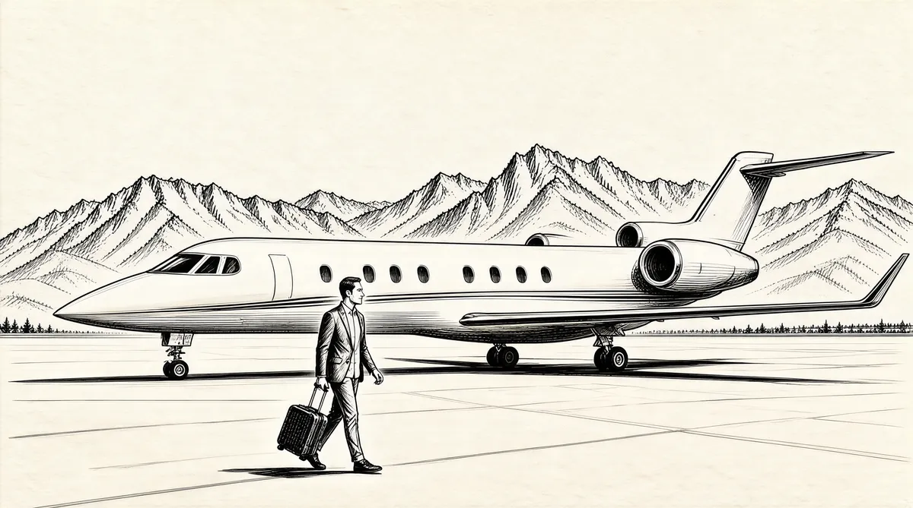

第2章 太阳谷

沃伦·巴菲特走出轿车，从后备箱中拖出旅行箱。他穿过护栏的大门，走向机场的停机坪。那里停放着一架反射着阳光的白色湾流IV型喷气机——和区域性商业客机一般大小，是1999年最大型的私人飞机。它正等着巴菲特和他的家人。一名飞行员从巴菲特手里接过旅行箱，放进飞机的行李舱。看到巴菲特亲自驾车并从车里拿出自己的行李，几乎每个第一次和巴菲特一起旅行的飞行员都会吃惊。然后，巴菲特走上舷梯，向乘务人员打招呼并走向靠窗的座位，尽管整个飞行途中他都不会朝窗外看一眼。巴菲特的心情很轻松，几周之前，他就期待着这次旅行。
同行的有巴菲特的儿子彼得及其妻子珍妮弗、女儿苏茜及其男友，还有两个孙子辈的孩子。45英尺长的机舱里摆放着奶咖色的皮革太空椅，一行人坐在了椅子上。当乘务人员从机上厨房——里面堆满了家人喜爱的零食和饮料——拿出饮品时，他们转动椅子，避开流线型墙面板，好让自己的空间更宽敞。沙发上放着一堆杂志：《名利场》、《纽约客》、《财富》、《游艇工业》、《罗博报告》、《大西洋月刊》、《经济学人》、《时尚》、《瑜伽》。乘务员是个女孩，她没给巴菲特送来杂志，而是抱了一堆报纸给他，外加一小篮薯片和一瓶樱桃可乐——和他那件红色的内布拉斯加毛线衫很是相衬。巴菲特向她表示感谢，并和她聊了几分钟，缓解她第一次和老板飞行的紧张情绪，然后让她告诉她的同事，他们都已准备就绪，飞机可以起飞了。之后，飞机顺着跑道滑行，腾空，然后拉升到4万英尺高。之后的两个小时，巴菲特一直埋头读报。其余6人在巴菲特周围玩闹、看电视和打电话，乘务员则在枫木餐桌上铺好桌布，摆好插满兰花的花瓶，然后回厨房准备午饭。巴菲特专心致志地阅读着报纸，仿佛是一个人在家学习。
他们乘坐的飞机价值3000万美元，为“分权所有型”喷气机。这架飞机为1/8分权，即8个所有者共享，但是共享者拥有的是每月固定时数的飞行，搭乘的飞机不固定。因此，全部的所有者想用的时候飞机均可立即起飞。飞行员、飞机维护人员、准备午餐的乘务员都是奈特捷公司的职员，提前6小时安排好。奈特捷公司属于沃伦·巴菲特的伯克希尔–哈撒韦公司。
过了一会儿，湾流IV型飞机飞越了斯内克河平原，飞向索图斯山脉——白垩纪巨变后产生的黑色古老花岗岩质的山脉，炙烤于夏日艳阳之下。飞机在明媚、澄澈的天空中飞行，进入伍德河河谷，飞行高度下降到8000英尺。在这个高度上，飞机开始遭遇下方褐色丘陵地形对上方天空发出的地形波冲击。当飞机摇摆、机上的人随之颠簸的时候，巴菲特却继续着他的阅读，稳若泰山。从窗口往下看，灌木丛点缀着山脊，成排的松树顺着风向、沿着峡谷之间的山脊一路延伸。看到预期的景致，巴菲特一家都露出笑颜。飞机继续下降，在穿过顶上山峰之间的狭窄缝隙时，正午的阳光将飞机拉长的阴影投到古老的矿业城市——爱达荷州的黑利市。
片刻之后，飞机降落在弗里德曼纪念机场。巴菲特走下飞机，来到停机坪，在7月的阳光下眯眼望去，两辆SUV（运动型多功能车）早已停候在飞机旁边。这两辆车由赫兹公司（Hertz）的工作人员驾驶，他们无论男女都穿着金色和黑色相配的公司T恤衫。不过，T恤衫上写的不是“赫兹”，而是“艾伦公司”（Allen&Co.）。
孩子们蹦跳着向前，飞行人员把行李、网球拍、巴菲特的红白两色高尔夫球包放进SUV。接着，巴菲特和家人与飞行员、乘务员握手道别，坐进SUV。经过太阳谷航空航运服务公司之后，他们随着摇晃的SUV穿过机场的大门，驶上那条通往山顶的路。
8分钟后，另一架喷气机抵达机场，驶向自己的停机位。
在洒满金色阳光的整个下午，一架接一架的飞机从东南边或西面进入爱达荷，降落在黑利市：重型的赛斯纳“奖状”型飞机、迷人的里尔喷气机、高速的红鹰、豪华的猎鹰，其余大部分都是外形很威风的湾流IV型飞机。时间慢慢过去，众多在阳光下闪光的白色巨型飞机成排停在跑道上，像是商店橱窗里摆满的玩具。
巴菲特一家循着道路标记，出机场后向前行驶了数英里，开往凯彻姆小镇——位于索图斯国家森林公园边上，就在埃克霍恩水道的拐弯处附近。行驶几英里后，他们绕过多勒山，几处褐色的斜坡之间有一片绿色地带。就在松树和微微泛光的白杨林带，坐落着太阳谷，这个山脉中神话一般的疗养地。海明威在这里写成了小说《战地钟声》，奥运会滑雪和滑冰运动员将此地视为他们的第二故乡。
巴菲特一家在这个星期二下午所遇到的家庭出游潮全都和艾伦公司有关——这是一家精品投行，精于媒体和通信行业。艾伦公司促成了好莱坞最大的几桩合并交易，并且十多年来一直主办一系列年会，在太阳谷款待客户和合作伙伴，提供休闲娱乐。公司首席执行官赫伯特·艾伦只邀请他喜欢的人，或者是那些他至少认为可以与之共事的人。
因此，这个会议名人和富人云集，有好莱坞的制片商和明星，比如坎迪斯·伯根、汤姆·汉克斯、罗恩·霍华德、西德尼·波拉克，娱乐业巨头巴里·迪勒、鲁珀特·默多克、罗伯特·伊格尔以及迈克尔·艾斯纳，出身社交名门的新闻业人士汤姆·布罗考、黛安娜·索耶和查理·罗斯，IT（信息科技）业的比尔·盖茨、史蒂夫·乔布斯和安迪·格鲁夫。每年都会有一群记者守在太阳谷聚会地的外面。
记者会提前一天来到新泽西的纽瓦克，在机场或者是其他类似的登机点，搭乘商业航班来到盐湖城，然后跑到登机口的等候区，坐在一大帮拥挤的人群中，等着飞向诸如怀俄明州卡斯珀、艾奥瓦州苏城的航班。时间一到，他们会搭上一架螺旋桨飞机，颠簸一小时来到太阳谷。到目的地后，他们的飞机会驶向机场的另一端一个差不多网球场大小的出口。他们可以在那里看到一群皮肤晒成棕黑色的艾伦公司的年轻工作人员，这些年轻人身穿印有“SV99”彩色字样的球衣和白色短裤，正在欢迎少数乘商务飞机到达的艾伦公司客人——这些客人可以立马被辨认出来：男士穿着西式靴子、PaulStuart（保罗·斯图尔特）品牌的短袖、牛仔裤；女士穿着山羊绒上衣，戴着弹珠大小的绿松石珠子。艾伦公司的职员已经事先从照片上记下了那些新面孔。他们会拥抱过去几年已经认识的客人，仿佛他们是多年的老友，然后迅速接过客人的包，把东西放在不远处等候的SUV上。
记者会去租车处租辆车，开到聚会地，此时他们敏感地意识到自己身份地位的低微。之后数天，太阳谷的很多地方都会彰显“私人”特色——房门紧闭，保安设施无处不在，花篮高悬，并摆放大型盆栽植物，以阻挡那些窥探的眼光。记者会在室外潜伏着，嗅着灌木的气息。1自从迪士尼的迈克尔·艾斯纳和美国广播公司的汤姆·墨菲在1995年的太阳谷年会中构思出他们的公司合并案以来，聚集于此的新闻媒体规模一直在扩大，太阳谷呈现出戛纳电影节那种商业氛围。但是，太阳谷爆出的合并案只是冰山一角。太阳谷聚会远不是为了达成交易，虽然交易吸引了大多数的媒体。每一年，都有这家公司或那家公司正在爱达荷的某座山里召开秘密会议，对某笔生意进行谈判的传闻。因此，当SUV一辆接一辆地开过时，记者们都试图透过车的前窗看看里面坐着谁。当有新闻价值的人物到来时，记者们会追踪他们的“猎物”进入聚会地，手里摆弄着照相机和麦克风。
当沃伦·巴菲特走出他的SUV时，记者们很快就认出了他。艾伦公司的董事、巴菲特的朋友唐纳德·基奥这么说过：“会议的基因里已经植入了这个人。”2大多数媒体人都喜欢巴菲特——为了不招人讨厌，他行事富有技巧，不怕麻烦，公众形象简单而率直，而且看起来很真诚。然而，巴菲特过着复杂的生活。他有5套房子，但只在其中两处居住。不知出于何种原因，巴菲特有过两任妻子。他说话爱引用家乡的俗语，眼里透着慈祥；他有一帮忠诚的朋友。但是，一路走来，他给人的却是强硬、冷酷的商人形象。巴菲特似乎想避开公众，但结果是，他所吸引的公众注意力几乎要多于地球上其他任何人。3巴菲特乘坐湾流IV型飞机去全美各地，经常参加名人聚会，有众多名流友人，但是，他说他最喜欢奥马哈、汉堡和节俭的生活。他说他的成功是基于一些简单的投资理念和每天满怀热情的工作，不过，如果事情只是如此的话，为什么没有人能够复制呢？
在走过摄影师身边的时候，巴菲特总是会主动挥手打招呼，并露出祖父般慈祥的笑容。摄影师们用胶片捕捉下巴菲特的举止，然后开始盯着下一辆车。
巴菲特驾车兜上一圈之后，就前往具有法国乡村风格的共管式私有公寓，一处令人向往的世外桃源，游泳池和网球场边花团锦簇，这是赫伯特·艾伦安置其贵宾的地方。屋里通常准备了赠送的礼物：印有“SV99”字样的艾伦公司的上衣、棒球帽、拉链绒面衣和球衣——每年的颜色都不同，还有带拉链的笔记本。尽管巴菲特的财富超过300亿美元——足以购买1000架湾流IV型飞机——但是，很少有比从朋友那里得到一件免费的高尔夫短袖衫更令巴菲特觉得高兴的事了。他花了好一会儿仔细察看今年的赠品。不过，更令他感兴趣的是赫伯特给每位客人的私人留言条，以及关于这次精心组织的聚会的日程表，上面说明了本年的太阳谷聚会为巴菲特都作了哪些准备。
时间精确的计划，详细周到的安排，如同赫伯特那一尘不染的法式回褶袖口，巴菲特对每一天、每个小时都作了安排。日程表清楚地列出了与会发言者及演讲主题——这些内容直到现在为止仍是严格保守的秘密——以及巴菲特将出席的午宴和晚宴。和其他客人不同的是，巴菲特对这些内容的大部分事先都有所了解，不过，他还是想看看日程表是怎么说的。
被称为“太阳谷之主”的赫伯特是年会的幕后导演，他让会议充满着随意自然的奢华。人们总是赞美他情操高尚、才华出众、见解不凡，而且慷慨大方。曾有客人脱口说道：“你会为了得到赫伯特的关注和重视而甘愿将生命置于脑后。”因为担心不再被邀参加太阳谷年会，那些颇有微词的人也很少赤裸裸地说赫伯特“与众不同”：坐不住，没耐心，自高自大。站在身材高瘦结实的赫伯特身影里，你得全神贯注尽力跟上那些像机关枪一样噼里啪啦的话语。赫伯特吼出问题，然后打断答话者，唯恐他们浪费了他一秒钟的时间。他语无禁忌，言论大胆。“华尔街最终会被淘汰。”有一次，他这么告诉一位记者，虽然他自己经营着一家华尔街投资银行，他把他的对手称为“热狗贩子”。4
赫伯特保持公司规模的小而精，他手下的投资银行家把自有资金投入到业务当中。这种非传统的方式令公司成为客户的合伙人，而不只是客户的服务者——客户是好莱坞和传媒业的精英人物。因此，当赫伯特做东设宴，他的客人会觉得这是个人殊荣，而不会觉得自己是被营销人员紧紧盯住的追猎对象。艾伦公司每年会做出详细的社交安排，而这些安排是根据每位嘉宾的私人社交网——艾伦公司所了解的嘉宾的人际关系网——以及艾伦公司认为他们应该认识哪些新朋友做出的。客人入住的度假公寓到酒店会议室的距离、受邀出席的餐会，以及他们旁边坐的人，都因身份而异。
巴菲特的朋友汤姆·墨菲把这类活动叫作“大象聚首”（elephant-bumping）。巴菲特说：“你能请到一群要人前来，是因为如果他们参加了‘大象聚首’，那么就可以让他们确认自己也是头‘大象’。”5
太阳谷在这方面无须质疑，因为和大多数“大象聚首”不同，这里的每个人都无法用钱来打动其他人。因此，结果就形成了某种精英伪民主。随之而来让人好奇的一点是看谁没被邀请，而让人更加心跳的地方是，看谁被取消了邀请。不过，在这个阶层内部，人们真的是在发展真诚的人际关系。艾伦公司通过慷慨丰富的娱乐活动提供一场盛大的欢宴。活动从头天晚上开始，客人们一副西部装扮，坐上古老的四轮马车，跟着牛仔们驶上一条蜿蜒小道，经过一块螺旋形的天然石头，来到特里尔·克里克·凯宾牧场。当日薄西山的时候，赫伯特·艾伦，或者是他两个儿子中的一个会在这里迎接来宾。一盆盆鲜红色的矮牵牛花和蓝色的鼠尾草装饰着白色的大帐篷，牛仔们在帐篷附近表演套绳技艺，给孩子们逗乐。与此同时，太阳谷的老朋友重聚在一起，比肩而立，手里拿着用来盛牛排和三文鱼的餐盘，欢迎新朋友的到来。巴菲特一家最后通常都会在西部的点点星空之下，和朋友们围坐在篝火旁边。
娱乐活动会在周三下午继续——坐在竹筏上，沿着萨蒙河，随性地在非常温柔的白色浪花中顺流而下。在出游中，人人喜笑颜开，因为艾伦公司为所有人的活动作了精心的策划。撑竹筏的人安安静静地引着竹筏穿过山谷，生怕自己打断了来宾间的谈话，打扰了合作联盟的萌芽。现场服务人员雇的是当地人，救护车排队候着，以防有人跌入冰冷的河水中。来宾们一离开竹筏，就会有热毛巾递上来，之后是一盘盘的野餐烤肉。
你会发现，那些不乘竹筏的客人在享受其他的乐趣——飞钓、射击和双向飞碟、山地自行车、桥牌、针织、自然摄影和随处可见的狗狗玩儿飞盘、在室外溜冰场溜冰、在完美的红土场打网球、在游泳池游泳，或者是在如茵的绿地上打高尔夫，他们乘坐的球车上满载着艾伦公司的防晒霜、零食和驱虫剂。6所有休闲活动和谐地进行着，所需要的一切看上去都无须开口，似乎取之不尽。工作人员供应了一切，艾伦公司的员工几乎是隐形的，但又永远适时地提供服务。
不过，百余名面貌娇好的儿童看护人员才是赫伯特的秘密武器。她们大多数一头金发，皮肤晒成深色，身着同款的T恤衫，配搭着艾伦公司的背包。当孩子的父母和祖父母在娱乐的时候，看护人员得不眨眼地看着每个孩子，这些孩子当然也和自己的同伴在一起游戏——在网球中心打球、玩儿橄榄球和K球、乘马车、观看马术表演、溜冰、接力赛跑、划船、钓鱼、艺术活动，或享用比萨和冰激凌。所有的看护人员都是经过挑选的，为的是要保证每个孩子玩得尽兴，年年都恳求大人再来这里——同时，看护人员也要令孩子的父母放心、高兴，父母们偶尔会看一眼这些非常具有魅力的年轻看护人员，因为他们能使自己和其他的成人朋友多待上几天，而无须对孩子心怀歉意。
巴菲特一直是对艾伦公司如此款待最心存感激的人之一。他喜欢携全家到太阳谷，因为如果让他独自和孙子们待在山里的度假村，那他可能什么都干不成。除了高尔夫球之外，他对户外运动没什么兴趣。他从来不玩儿双向飞碟或山地自行车。他认为水犹如“牢狱”，让他坐竹筏犹如给他戴上手铐。与参加这些活动相反的是，他如鱼得水地进入“象群”的中心。他玩儿了一会儿高尔夫和桥牌——和全美动画片协会主席杰克·瓦伦蒂比了一场高尔夫，赌注是1美元；和马里蒂兹·布罗考打了一场桥牌。然后，和其他人聊天，比如《花花公子》的首席执行官克里斯蒂·海夫纳、计算机行业的迈克尔·戴尔。
有时，巴菲特会离开高尔夫球场，在自己的公寓房间待上好长一段时间。他坐在石制壁炉旁收看商业新闻。7窗外，鲍尔迪山被松林覆盖，鲜花盛开的河岸如同波斯地毯：色彩缤纷的羽扇豆、蓝宝石色的飞燕草高高地立着，下面是罂粟花和印第安彩笔花，佛甲草和石莲花依偎在清新的蓝色鼠尾草和婆婆纳之间。不过，巴菲特几乎注意不到这些迷人的景色，他来这里为的是享受赫伯特·艾伦所营造的温馨气氛。8巴菲特喜欢和他最亲密的朋友待在一起：凯瑟琳·格雷厄姆和她的儿子唐、比尔·盖茨夫妇、米基·基奥和唐纳德·基奥、巴里·迪勒和黛安娜·冯·弗斯腾伯格、安迪·格鲁夫和他的妻子伊娃。
不过，对巴菲特来说，最重要的一点是，在大多数美国家庭的所有成员难得聚在一起时，他可以把自己的大家庭重聚到一起。他女儿苏茜·巴菲特说：“他喜欢我们所有人住在一栋房子里。”苏茜住在奥马哈，弟弟豪伊和妻子德文住在伊利诺伊州的迪凯特，巴菲特的小儿子彼得和妻子珍妮弗住在密尔沃基。
与巴菲特结婚47年如今和他两地分居的妻子苏珊从旧金山的家里飞来和他们见面。巴菲特20多年的伴侣阿斯特丽德·门克斯，则一直住在奥马哈的家中。
周五晚上，沃伦·巴菲特穿上一件夏威夷短袖衫，陪妻子一起去参加在公寓旁的网球场上举行的传统泳池派对。大部分客人都认识苏珊，也很喜欢她。在灯火通明的奥林匹克泳池前，伴着火炬灯的光影，她会演唱怀旧歌曲，成为泳池派对的焦点。
今年的聚会中，鸡尾酒和朋友情谊流淌其间，人们谈论着刚刚了解到的新名词——B2B（商家对商家）、B2C（商家对客户）、网络旗帜广告、宽带——这些词儿成了阿尔·奥霍乐乐队的竞争者。整个周末，伴随着人们的握手、亲吻和拥抱，一种隐约的不安如烟雾一般在午餐、晚餐和鸡尾酒会中弥漫开来。一批新近出现的IT高管们带着异乎寻常的狂傲，向一年前从未听说过他们的人介绍自己，某些人所表现出的傲慢和太阳谷通常的氛围格格不入。9一般情况下，太阳谷会以一种决定性的非正式因素起主导作用，赫伯特·艾伦会用某种不成文的规则来对付狂妄自大的人，他们的下场就是以后再也不会被邀请参加年会。
当年会的重要嘉宾发表演说时，气氛变得凝重起来。公司的高管、政府的高官以及日程表上列示的其他演讲者，在太阳谷的发言和他们在其他地方的讲话大为迥异。但出了太阳谷会场大门，几乎没有人私下谈论他们发言中的任何言论。记者们被禁止入内。一些著名的记者，以及拥有电台网络和报纸的传媒业大亨坐在听众席，但都尊重守口如瓶的原则。因此，演讲者们只对与他们同等身份的圈内人尽情发挥，讲述重大且往往真实的事，这些内容在媒体面前从不会被说得明明白白，因为它们太过直白、太易透出讽刺意味，或者说是太有可能被误读。一般的记者会在外面设伏，希望能听到里面传出的只言片语。
今年，互联网的新晋大人物一直都趾高气扬，宣扬他们的宏伟目标。大肆夸耀自己新近出炉的公司并购案，并希望从在座的资金经理们那里筹得资金。那些管理着他们的养老金和储蓄的资本持有人控制着令人惊叹的巨额财富：超过1万亿美元。101999年的1万亿美元相当于整个美国的个人所得税收入，足够为9个州的每户家庭买一辆全新的宾利轿车。11你可以在芝加哥、纽约、洛杉矶买下所有的房产。有些需要资金的企业会上台作企业演示，希望下面的听众能给他们提供资金支持。
这一周的早些时候，以汤姆·布罗考为首、名为“互联网和我们的生活”的团队举办了一连串的演示，主题是关于互联网将如何再造通信行业。在线旅游公司的杰伊·沃克带着听众去互联网那令人眩晕的美妙世界畅游了一番——信息高速公路被认为可与1869年铁路时代的来临相媲美。高管们一个接一个为自己的公司计划了炫目的未来，未来不再受仓储和地域的限制。会场里充满了关于未来的醉人气息。这一切如此诱人，有些人深信不疑，认为一个全新的世界正呼之欲出；还有人则想到了万金油推销员。开IT公司的家伙们将自己视为“将火种带给凡人的普罗米修斯”那样的天才。现在，那些在旧经济中开发、制造无趣乏味的生活必需品，比如汽车零件、草坪护理工具的公司则关心自己应该购买多少新技术。一些互联网公司的股票基于根本不存在的巨额赢利进行交易，而生产实物的实体企业的价值却在降低。当IT股票压倒旧经济，在之前3年半时间里才翻了一番的道琼斯平均工业指数，现在仅用了4个月就突破了一度遥不可想的1万点大关。
发言的间歇，很多新富阶层人士聚集在被隔离保护起来的露天餐厅。餐厅旁边是达克池塘，池塘里有一对天鹅在游水。在这里，任何客人——但不能是记者——都可以在身着卡其裤、开司米羊绒衫的一大群人里缓缓走动，去向比尔·盖茨或安迪·格鲁夫问上个问题。与此同时，新闻记者们对互联网名人们紧追不放，往返于其居住的公寓和会场，这种场景放大了他们已经膨胀的自大情绪，这种情绪已经渗透到1999年太阳谷年会中。
整个周五下午，一些互联网的新兴风云人物都在游说赫伯特·艾伦，希望自己能加入知名摄影师安妮·莱博维茨在次日下午为《名利场》杂志进行拍摄的“传媒全明星”阵容。他们认为自己被邀请到太阳谷的原因是自己是时下的名人，并难以相信莱博维茨已经自行选定了拍摄对象，比如，为什么莱博维茨会选择巴菲特——他对传媒业的影响是间接的，是通过董事会成员资格、广泛的人际关系影响，以及或多或少的传媒业投资。此外，巴菲特还是个老式传媒人士。这些新兴人物们更很难相信，刊有巴菲特照片的杂志能卖得出去。
这些属于未来全明星阵容的人们觉得自己被轻视了，因为他们非常清楚传媒行业的天平已经移向了互联网。他们的确不受重视，即便是赫伯特·艾伦自己都认为对IT和传媒业股票进行估值的“新模式”不可靠。这种新估值模式的根据是点击率、眼球数和对遥远未来的预期，而不是公司的赢利能力。“新模式，”他对此嗤之以鼻地说，“就像是新的做爱姿势，根本就是胡扯。”12
次日早上，代表着“旧模式”的巴菲特很早就起床了，因为他是今年年会的闭幕演讲人。巴菲特总是拒绝在其他公司举办的会议上发言的邀请，但是，当赫伯特·艾伦请他在太阳谷年会上发言，他总会同意。13星期六早上的闭幕演说是年会的一大要事，因此，几乎所有人都不再去高尔夫球场，也不去钓鱼，他们都到太阳谷会场吃自助早餐，然后找个座位坐下。今天，巴菲特会对股票市场发表看法。
鼓吹者们所推动的市场令IT股票急速冲到了疯狂的高点，私下里，巴菲特对此持批评态度。IT股票的表现令伯克希尔–哈撒韦望尘莫及，而巴菲特不购买IT股票的严格纪律似乎也过时了。但外界的评论对巴菲特的投资方式丝毫没有影响，直至今天，巴菲特发表过的唯一公开声明就是他从来不作市场预测。因此，他决定站上太阳谷的发言台发表如此的演讲，这是前所未有的事情，也许是时机到了。巴菲特有着坚定的投资信念，而且有迫切的欲望想要宣讲出来。14
巴菲特花了两周时间准备这次发言。他明白，市场并不只是人们买卖股票的地方，股票似乎是赌场里的筹码，筹码则代表了公司业务。巴菲特思考的是筹码的总体价值。这些筹码值多少钱？然后，巴菲特会从源源不断的文件中评估公司以往的业绩。互联网的出现并不是新技术第一次震动股票市场。商业发展史上充满了新技术——铁路、电报、电话、汽车、飞机、电视……都是加快沟通的革命性的方式——但是，这些发明当中有多少已令投资者发财致富呢？巴菲特将要对此进行说明。
在自助早餐之后，克拉克·基奥走上演讲台。巴菲特和基奥一家相识多年，他们在奥马哈是街坊邻居。巴菲特是通过克拉克的父亲唐纳德才加入太阳谷活动当中的。唐纳德·基奥是可口可乐的前总裁，艾伦公司的现任董事长。在1982年可口可乐从艾伦公司购买哥伦比亚电影公司的时候，唐纳德认识了赫伯特·艾伦。赫伯特不着推销痕迹的营销方式给基奥和可口可乐的首席执行官罗伯托·戈伊苏埃塔留下了深刻的印象，于是他们说服艾伦加入了可口可乐的董事会。
唐纳德·基奥是艾奥瓦州苏城一位牧场主的儿子，做过侍应生。目前，他名义上已从可口可乐退休，但是，他的生活仍然和“真家伙”紧密相连。而且他的影响力如此之强，以至于有时他被称为公司的“影子首席执行官”。15
当基奥一家在20世纪50年代成为巴菲特的邻居时，沃伦·巴菲特曾问唐纳德如何支付孩子的大学费用，并建议他投资1万美元入股巴菲特的公司。但是唐纳德当时是奶油果仁咖啡的推销员，要供6个孩子上教区学校，一周要开销200美元。“我们没钱，”克拉克告诉听众，“这就是我们家的一些往事，我们永远也不会忘记。”
巴菲特走上讲台，穿着他最喜欢的内布拉斯加红色毛线衫，里面是一件格子衬衣。他接着克拉克的话，讲完了这个故事。16
基奥一家是非常好的邻居。虽然唐纳德有时的确会说，他有份工作，而我没有。但是，我们的关系非常好。有一次，我妻子苏珊去他们家，以中西部人那众所周知的方式想借一勺糖。唐纳德的妻子米基给了苏珊一整袋。我知道之后，当天晚上亲自过去拜访他们。我对唐纳德说：“你为什么不拿25000美元入股投资呢？”基奥一家当时都愣了，我的建议被拒绝了。
我之后又找他们，提出克拉克刚才提到的1万美元投资，结果还是一样，但我并不觉得被伤了自尊。因此，我后来又去找他们，提出5000美元的投资额，但再一次被拒绝。
后来，1962年的一个晚上，我又去基奥家。我还没想好自己要不要把投资额降低到2500美元，但是，我到他们家的时候，整栋房子里没有光亮，一片寂静，屋里什么都看不见，但我知道这是怎么回事。我知道，唐纳德和米基躲在楼上，所以，我没有离开。
我按门铃、敲门，都没人应我。但是，唐纳德和米基就在楼上，而屋子漆黑一片。
光线太暗，无法看书；时间太早，还不到睡觉时间。我记得那一天，当时的情景历历在目。那是1962年6月21日。
克拉克，你什么时候出生的？
“1963年3月21日。”（克拉克回答）
历史就取决于这类小事。因此，你应该很高兴，你父母没有给我那1万美元。
通过这个小小的互动，巴菲特的演讲抓住了听众的注意力，然后他将话题转到手边准备的内容上。
朋友们，我今天想谈论一下股票市场。我会讨论一下股票的定价，但是我不会对它们下个月或下一年的波动进行预测。估值不是预测。
短期内，市场是投票器；而在长期，市场是称重器。
重量最终才是有价值的，但是短期内，数量很重要。这是一种非民主的投票，也不会进行文化测试决定投票资格，这些你们都了解。
巴菲特按下一个键，在大屏幕上播放幻灯片。17众所周知，巴菲特不精通电脑，此时，听众席上的比尔·盖茨屏住了呼吸，直到巴菲特展示出第一张幻灯片，他才松了一口气。18
道琼斯工业平均指数
1964年12月31日874.12
1981年12月31日875.00
巴菲特走到屏幕前，开始进行解说。
在这17年的时间里，经济规模增长了5倍，《财富》500强企业销售额的增长超过5倍。然而，在这17年里，股票市场完完全全落在了后面。
（他后退了一两步）当你们投资的时候，你们所做的事情是延迟消费，现在把钱投出去，在一段时间之后会获得更多的钱。关于投资，只存在两个真正的问题：一是你想得到多少回报，二是你想什么时间得到回报。
伊索称不上是一位金融家，但是他说过“一鸟在手胜过双鸟在林”。不过，他并没有提到时间。
巴菲特解释说，利率——借贷成本——是对“时间”的定价。金融领域的利率就如同物理学当中的重力。利率变化，所有金融资产，包括房子、股票、债券的价值都会发生变化，就如同鸟的价值会波动一样。“这就是为什么有时手里的鸟比林子里的鸟值钱，有时林子里的鸟比手里的鸟值钱。”
巴菲特说话音调平稳，带着鼻音，吐字快得如连珠炮，他将伊索和20世纪90年代的大牛市联系到了一起，而他认为这个牛市纯属瞎闹。利润的增长远远低于前期，但林子里的鸟却变得昂贵，因为利率处于低水平。利率水平如此低，想持有现金的人数在减少。因此，投资者正在向林中鸟支付闻所未闻的价格。有时，巴菲特会将其称为“贪婪作祟”。
听众席里坐满了IT业的领军人物，在从大牛市中攫得大笔财富的同时，他们也改变着世界。此刻，他们坐在那里，一言不发。投资组合里充斥着各种估值过高的股票，而他们的公司股票处于资产组合的第一线。他们认为这是很了不起的事。这是新模式，互联网时代的黎明。他们的态度是，巴菲特没有资格说他们贪婪。巴菲特，这个聚敛钱财数年、几乎不往外拿的人，这个从车牌就能看出其“节约”的吝啬鬼，这个将大部分时间用于思考如何赚钱的人，这个打破IT泡沫、没搭乘IT列车的人，正在往他们的香槟里吐口水。
巴菲特继续他的发言。只有三种方式，股票可以保持一年10%或10%以上的增长。一是利率下降，保持在历史低位。二是投资者，而不是雇员、政府或其他主体，在经济中所占份额高于历史已有水平。19他说，还有就是经济的增速开始快于正常情况。20诸如此类的乐观假设被巴菲特斥为“痴心妄想”。
巴菲特说，有些人并不认为整个市场会繁荣，他们只是认为自己能够从中挑选出胜利者。巴菲特解释说，虽然创新可能让世界摆脱贫困，但是历史上创新的投资者后期都没有以高兴收场。他一边说，一边像乐队指挥那样挥舞着手臂，成功地换上了另一张幻灯片。
这张幻灯片上的内容来自于一份长达70页的清单，里面包括了美国所有的汽车公司。
这清单上面有2000家汽车公司：汽车是20世纪上半叶最重大的发明。它对人们的生活产生了巨大的影响。如果你在第一批汽车诞生的时代目睹了国家是如何因为汽车而发展起来的，那么你可能会说，“这是我必须要投资的领域。”但是，在几十年前的2000多家汽车企业中，只有3家企业活了下来。21而且，曾几何时，这3家公司的出售价格都低于其账面价值，即低于当初投入公司并留存下来的资金数额。因此，虽然汽车对美国产生了巨大的正面影响，但却对投资者产生了相反的冲击。
巴菲特放下清单，把手放进口袋。“有的时候，找出失败者要容易得多。我想，在此之后，大家能得出显而易见的结论。你应该做的事就是卖空经营不好的公司。”巴菲特点击了一下，一张相关的幻灯片跳了出来：
美国经营不善的企业数量
1900年——1700万
1998年——500万
坦白说，我很失望，因为巴菲特一家在这期间都没有进行卖空。其实，一直都有经营失败的公司。
听众中有一些人轻笑起来，虽然声音不大。他们的公司可能正在亏钱，但是他们心里都确信自己是胜利者。超新星在遥远的天空闪耀着星光。毫无疑问，某一天，他们将在史册上留下美名。
巴菲特再点击一下，又出现一张幻灯片。
现在我们再来看看21世纪另一项伟大的发明：飞机。从1919年到1939年，美国约有200多家航空公司。想象一下，当你处在小鹰号时代，你是否能预见航空业的未来发展。你可能会看到一个你做梦都想不到的世界。不过，假设你有此远见，你预见到所有这些人要么希望坐着飞机走亲访友，要么希望离家远走高飞，或者你预见到了任何可以在飞机里做的事。然后，你决定这就是你要投资的领域。
历史上，对航空企业的所有股票投资都赚不到钱，和几年前的情形如出一辙。
因此，我想告诉你们：我真的宁愿这么想——当我回到小鹰号时代，我会有足够的远见和“见义勇为”的精神，把奥维尔·莱特给打下来。但我没做到，我有愧于未来的资本投资人。22
下面又是一阵轻笑。有些人开始对这种毫无新意、过时的例子感到厌烦，但是出于尊敬，他们继续听巴菲特讲下去。
这时，巴菲特正在谈论他们的公司业务。“推广、宣传新行业是好事，因为新行业很容易推销出去。而要推销现存的产品则非常艰难。相比之下，推销没什么人懂的产品要容易得多，即使是亏损的产品，因为不存在量化的要求。”这番话直接针对席上听众，很有杀伤力。
但是，你知道，人们还是会不停地投资。这让我想起一个关于石油勘探商的故事。这人死后到了天堂。“我核对过你的情况，你符合所有条件，不过有一个问题。”上帝说，“我们这里有严格的居住区法律规定，我们让所有石油勘探商待在一个区域。你也看到了，这里已经完全满了，没地方给你了。”
这位石油勘探商说：“你不介意我说句话吧？”
上帝说：“不介意。”
于是石油勘探商把手拢在嘴边，大声叫道：“地狱里有石油。”
结果可想而知，地狱之门开了，所有的石油勘探商们开始直往下冲。
上帝说：“这真是一个妙计，那么，你进去吧，就跟在家一样，随意些。这片地方都归你了。”
这位石油勘探商停了一会儿，然后说：“不，我想我还是跟他们一起吧，毕竟，空穴不来风啊。”23
这就是人们认识、感受股票的方式。人们很容易相信“空穴不来风”这个道理。
这番话引起一阵不大不小的笑声，然后笑声戛然而止，因为听众一下明白了巴菲特的话中之意——他们就跟石油勘探商一样没脑子，听信传言，跑到地狱去找石油。
巴菲特的话锋一转，回到林中鸟。他说，根本就不存在新模式。股票市场的最终价格只反映经济的产出。
巴菲特换上一张新幻灯片，显示出过去几年的市场价值已经大大超过了经济增长。巴菲特说，这意味着之后17年时间的市场状况不会比1964~1981年的情况好多少，在这段时间，道琼斯指数完全没有增长。“如果我必须给出这段时间最有可能的收益率，那可能是6%。”24不过，最近潘恩韦伯–盖洛普公司的调查显示，投资者们预期的股票收益率为13%~22%。25
巴菲特走到投影幕前，浓密的眉头动来动去，他指着一张有一对赤身男女的漫画——摘自一个关于股票市场的传奇故事《客户的游艇在哪里？》。26漫画上男人对女人说：“有些事儿没法对一名处女说清楚，无论是说给她听还是拿图片给她看。”听众听明白了，意思就是买互联网股票的人被忽悠了。但大家都僵硬地坐在那儿，一声不吭。没人笑得出来，连轻笑、窃笑都没有。
巴菲特回到讲台，告诉听众们他从伯克希尔–哈撒韦给他们带来了“糖果包”。
我刚刚买了一家叫奈特捷的公司，它出售可分权所有的喷气机。我本想送你们一人一架湾流IV型飞机的1/4股。不过，当我到了机场，我就意识到对你们大部分人来说，这实在是委屈你们了。
这个时候，大家笑了起来。巴菲特继续说，作为替代，他准备一人送一个珠宝商用的小型放大镜，他们应该用来看看彼此太太手上戴的戒指——尤其要注意看第三任太太的。
此话颇有点睛之效，听众席上的人大笑起来，鼓掌欢呼。然后，人们又不做声了。一股怨气在整个房间暗暗涌动。在1999年太阳谷年会上，关于股票市场过度膨胀的演讲就像是对一屋子名声不好的人宣扬贞洁。巴菲特的发言也许对听众产生了吸引力，让他们坐在椅子上不离去，但是，这不意味着他们会示弱。
不过，有些人认为他们听到了很重要的事情。“很了不起，这是关于股票市场的基础教程，一节课就涵盖了一切。”这是盖茨的想法。27手握资金的投资经理则发现这次演讲令人感到安慰、身心通畅。
巴菲特举着一本书向大家示意：
这本书对1929年狂躁的股市进行了细致深入的分析，充满了智慧。埃德加·史密斯的《用普通股进行长期投资》一书证明了股票收益总是高于债券。史密斯发现了5个原因，但是其中最新颖的一个原因是，公司可以保留一部分盈利，然后以同样的回报率进行再投资。这就是收益再投资——1924年的创新理念。但是，正如我的导师本杰明·格雷厄姆以前一直说的，“好主意带给你的麻烦多于坏主意”，因为你会忘记好主意是有限制条件的。凯恩斯在他的书的序言中写道：“用历史的眼光对未来进行预测，是非常危险的事。”28
巴菲特赞同这一观点：人们不能因为前几年股票价格的加速上涨就以此类推。
“现在，还有没有什么人没被我挖苦到？”29他反问了一句，没人举手。
“谢谢各位！”巴菲特以此结束了发言。
巴菲特的信条是“表扬单个人，批评一类人”。他并不是故意要让演讲这么具有挑衅性和令人倒胃口，因为他也非常在意别人怎么看他。他并没有对始作俑者指名道姓，他认为这些人不会把他的笑话当回事。巴菲特的观点陈述强大有力，几乎无懈可击，他认为，即使是有人不喜欢他的观点所传递的信息，他们也必须要承认其威力。听众们感受到的所有不适均未被明确地表达出来。之后，巴菲特一直回答提问，直到会议结束。人们起立，对他的演讲报以掌声。无论他们对巴菲特的演讲持何种态度，无论以什么标准衡量，这次演讲都堪称体现功力之作。
在投资行业，5年的杰出业绩足够表现出不凡的眼光，巴菲特在这个行业浸淫了44年，一直处在一流的位置。但是，随着纪录的保持，问题也在逼近：巴菲特什么时候会停止脚步？他会宣告结束其主导地位吗？或是会发生某项重大变动颠覆其位吗？有些人认为，现在是时候了，也许可以用个人电脑这样的发明，再加上互联网这样具有说服力的技术，来说服或反驳巴菲特。但是，巴菲特显然对可以免费获取的信息置之不理，而且无视新世纪正到来的现实。当人们礼貌客套地说“沃伦，演讲非常精彩”的时候，这些年轻的名流们其实心不在焉，对巴菲特的观点不以为然。30
重点不在于巴菲特错了，而在于他最后被证明是对的，而他对未来投资的严肃预期和他传奇的过去形成了鲜明的对比。在巴菲特早期辉煌的日子里，股票价格很便宜，巴菲特把股票一把一把地积攒到一起，几乎就他一个人注意到了地上无人问津的金苹果。而随着时间的推移，障碍越来越多，进行投资、保持优势、发现人所未见的价值，这些事情的难度都在增大。既然现在是新生力量登场的时间，何必在意那个对他们进行说教的巴菲特是何许人？何必理会那个声称他们会断送牛市、挣不到钱的人呢？
在下午剩余的慵懒时光里，赫伯特·艾伦的客人要么享受最后一场网球或高尔夫，要么去达克池塘边的草坪闲聊一会儿。巴菲特整个下午都和他的老朋友待在一起，他的朋友们都祝贺他进行了一次成功的演讲。巴菲特认为他以令人信服的方式动摇了听众的想法。他并不是发表了一次充斥着权威腔调的演讲，只不过是坚持了自己一贯的观点。
巴菲特希望得到人们的喜爱。他通常很受人们欢迎，而不是被人暗地里嘀咕。但是，他怎么没能说服那么多人呢？这些人认为，巴菲特在为他错过IT繁荣找理由。看到他做出了如此明确的预期判断，他们感到非常吃惊，在他们看来，那些预言肯定会被证明是错的。巴菲特背地里被称为“新好男人沃伦”。“沃伦错过了这班车。他怎么可能错过这班车呢？他可是比尔·盖茨的朋友。”31
那天晚上的晚些时候，在离滨河度假酒店（RiverRunLodge）几英里远的地方，结束晚宴的客人聚在这里商讨计划。赫伯特·艾伦作了最后的发言，他感谢了不同的与会人员，回顾了活动情况。之后，苏珊·巴菲特坐到窗户旁边的演唱台上——从这里可以俯瞰布满卵石的比格伍德河——再一次唱起了经典老歌。然后，客人们回到太阳谷住所的露天平台，那儿正举行周六晚间冰上秀，奥运会滑冰选手正在表演花样滑冰，以及舞姿动人的冰上芭蕾。
午夜，烟花绚烂地划过天际，太阳谷1999年年会成为又一件令人愉悦的豪华盛事。然而，大多数人所记住的不是划水或滑冰表演，而是巴菲特关于股票的演讲——确切地说，这是30年时间里他发出的首次预言。
[1]分权所有型（fractionalownership）是指有意购买商务喷气机的买主，无须购整架飞机，而是购买1/4、1/8或其他比例的所有权，由商务喷气机公司来进行操作，包括飞行及维修。——译者注
[2]赫兹公司，全球最大、最著名的汽车租赁公司。——编者注
[3]SV99，为“SunValley1999”的缩写，意为“太阳谷1999”。——编者注
[4]K球，英式足球与棒球的结合。——译者注
[5]真家伙（RealThing），是1969年可口可乐的著名广告语。——译者注
[6]卖空交易者认为股票价格会下跌，因此借来股票并卖出去。如果这么做，那么“卖空”的利润来自于把股票以更便宜的价格买回来。如果股票价格上涨，那么卖空交易者会亏损。卖空通常都很有风险，因为你的预期和市场长期趋势相反。——译者注
[7]小鹰号是莱特兄弟发明的飞机名字。——译者注
[8]奥维尔·莱特，莱特兄弟中的弟弟。——译者注